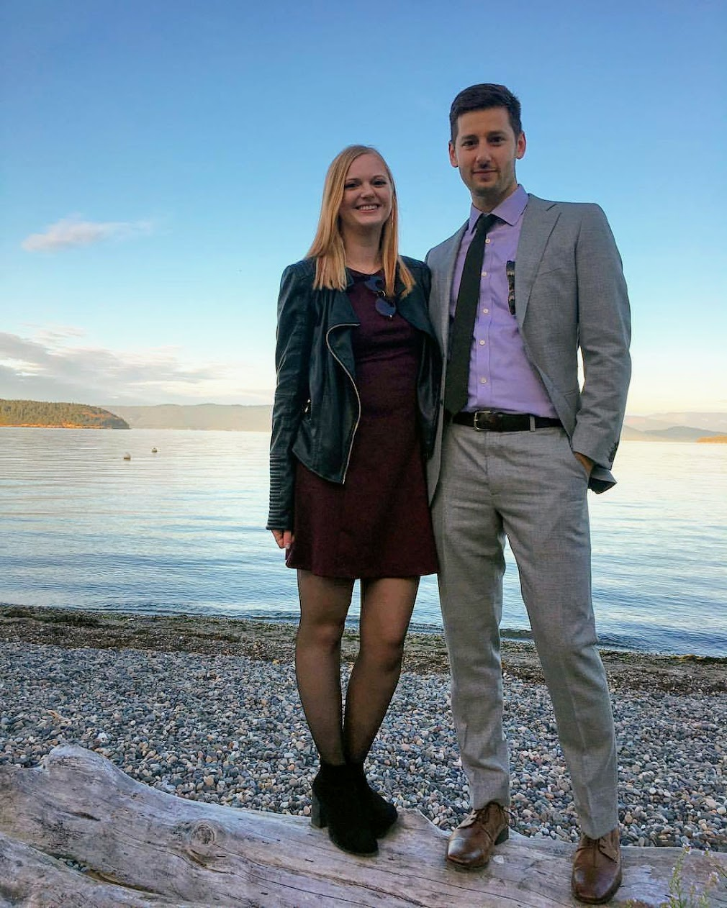

Hi, I'm Brett Spencer.
This is my first website. It was designed to showcase my technical skills, and was built using HTML, CSS, jQuery, and GIMP. v1 is checked in on GitHub and will soon be hosted.
Personal Statement
My interest in computer science dates back to my years in high school, where I excelled in physics, chemistry, and math. When I was a senior, I took a first-year calculus course at a local college (such an advanced-level class was not available in high school) and earned an A. It seemed only logical that I pursue a career in electrical engineering.
When I began my undergraduate career, I had the opportunity to be exposed to the full range of engineering courses, all of which tended to reinforce and solidify my intense interest in engineering. I've also had the opportunity to study a number of subjects in the humanities and they have been both enjoyable and enlightening, providing me with a new and different perspective on the world in which we live.
In the realm of engineering, I have developed a special interest in the field of laser technology and have even been taking a graduate course in quantum electronics. Among the 25 or so students in the course, I am the sole undergraduate. Another particular interest of mine is electromagnetics, and last summer, when I was a technical assistant at a world-famous local lab, I learned about its many practical applications, especially in relation to microstrip and antenna design. Management at this lab was sufficiently impressed with my work to ask that I return when I graduate. Of course, my plans following completion of my current studies are to move directly into graduate work toward my master's in science. After I earn my master's degree, I intend to start work on my Ph.D. in electrical engineering. Later I would like to work in the area of research and development for private industry. It is in research and development that I believe I can make the greatest contribution, utilizing my theoretical background and creativity as a scientist.
I am highly aware of the superb reputation of your school, and my conversations with several of your alumni have served to deepen my interest in attending. I know that, in addition to your excellent faculty, your computer facilities are among the best in the state. I hope you will give me the privilege of continuing my studies at your fine institution.